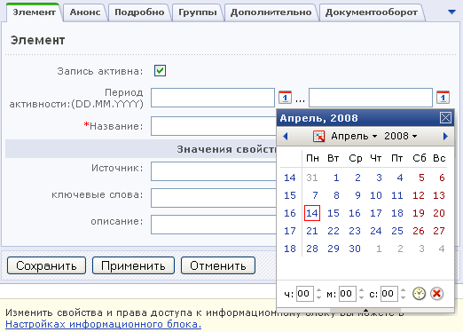

Чтобы добавить новость, выполните следующие действия.
- Откройте страницу типа информационных блоков Новости: Контент > Новости > раздел Новостей, в котором необходимо создать новость. Например, инфоблок Новости компании
- На странице со списком новостей выберите пункт Контекстного меню Добавить элемент. Вы перейдете к форме создания нового элемента (новости).
- Установите флажок в поле Запись активна, чтобы новость была доступна для просмотра в публичном разделе сайта.
- Укажите период активности записи. Нажмите на кнопку , расположенную рядом с полями Период активности, чтобы использовать календарь для выбора даты. Вы можете заранее добавить новость в административный раздел. Показ новости начнется с указанной вами даты.

- Введите название новости.
- Перейдите на закладку Анонс и создайте описание новости для анонса.
- Укажите полный текст новости. Для этого перейдите на закладку Подробно.
- На закладке Группы выберите раздел инфоблока Новости компании, к которому относится новость.
- Откройте закладку Дополнительно. Здесь вы можете указать индекс сортировки и символьный код новости.
- Нажмите кнопку Сохранить, чтобы добавить новость и вернуться к списку новостей.